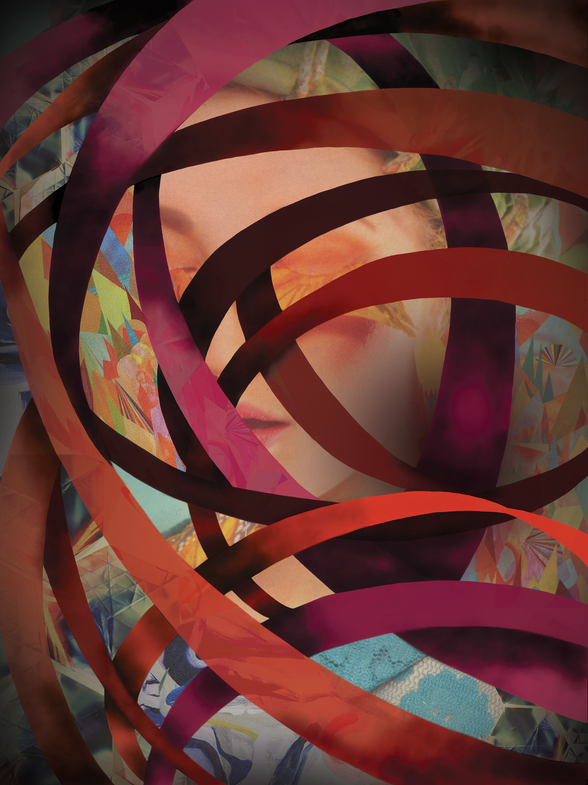

Timeless

Beginning Graphic Design (Fall 2018)
“Timeless†is a poster that was inspired by line patterns. The main focus of this project for me was to express how line patterns never get old. To create this poster, it went through several different studies. First, I started with the photo studies of different kinds of line patterns I found around me. Then, with a time limit of 30 seconds to a minute, I hand drew based on the photos. Those drawings were then used to create digital drawings. By using all three different kinds of line patterns drawing I created, I was able to make a collage for “Timeless.†The composition was inspired by different clock towers around the world.
Disruption of Thought

Image Studio (Spring 2018)
This work was created in Visual Communications: Image Studio class. For this assignment, we (the class) were told to create an image that shows disruption. The concept I decided on for this project was the disruption of attention deficit disorder from my own point of view. This work is a digital collage and drawing. I have lived with this learning disability for a long time and I wanted to somehow express the frustrations that come with it. The ribbon-like texture is the thoughts that are going across my head all at once while trying to focus on something. The girl in the image has her eyes closed to take a break from the madness, which is how I feel sometimes when I am just overwhelmed with thoughts and distractions. It also portrays feeling being completely trapped in one’s own thoughts.
Jenson Typeface Study
Beginning Typography (Spring 2018)
The purpose of this poster is to understand the history of Jenson typeface and typographic composition. The poster uses different weights and font sizes.